tour-receipts-archive-cleanup FAIL 0
apps os + libreoffice_calc
Our Andes tour receipts folder has piled up and the expense sheet that's open is stale. I'm handing the folder to accounting tomorrow, so tar the receipt text files into a single gzip archive beside the folder, delete the loose originals, and make the sheet's amount column match what the receipts actually say.
task config + evaluator
{
"config": [
{
"type": "execute",
"parameters": {
"command": "mkdir -p '/home/user/travel/andes_tour' '/home/user/travel/andes_tour/receipts' && : > '/tmp/__fixture.b64' && printf %s 'UEsDBBQACAgIADSKHl0AAAAAAAAAAAAAAAALAAAAX3JlbHMvLnJlbHOtks9qwzAMh+99CqN747SFMUacXsqgtzK6B9BsJTGJ/2BrW/b2M2OwdZSwwY6Wf/r0IdTsZzeJF0rZBq9gU9UgyOtgrO8VPJ7v17ewb1fNA03IJZIHG7MoPT4rGJjjnZRZD+QwVyGSLz9dSA65PFMvI+oRe5Lbur6R6TsD2gumOBoF6Wg2IM5vkX7DDl1nNR2Cfnbk+cqIH4lCxtQTK5gn+RrS+BTCWBUoyOsu27+6mAUXR4wGGaUOidYxFUhiS/nLqnSfSjl/JJa8dv+5I5qZvCGzrIQxfhqtGnlxC+07UEsHCGu/dgTfAAAAQgIAAFBLAwQUAAgICAA0ih5dAAAAAAAAAAAAAAAADwAAAHhsL3dvcmtib29rLnhtbI1T227bMAx931cYek98SeulQZwic2q0wC5F07XPsk3HWmTJkJhbh/17aTnuOmwPe7AlktLhIXk0vz420tuDsUKrhIXjgHmgCl0KtUnY98dsNGWeRa5KLrWChJ3AsuvFh/lBm22u9daj+8omrEZsZ75vixoabse6BUWRSpuGI5lm49vWAC9tDYCN9KMgiP2GC8V6hJn5HwxdVaKAlS52DSjsQQxIjsTe1qK1bDGvhISnviCPt+1X3hDtlMuC+Ys32vfGy3mx3bUZnU5YxaUFKrTWh2/5DyiQKuJSMq/kCKluWsqQCynwNJz9A0sjXaF85OwcTwIO9ne8Mx30rTbiRSvkcl0YLWXC0OzOaYkxiuJfkXXXsUee28F5fBaq1IeE0axO7/YHt30WJdY0yXgyvRh8tyA2NSZsGl5FzEOeP3QdS1gc0LVKGIsuiUPhVMkeKF9nUUH+u4rc8IbVU66zcKQxWVKF57x3JeV2kkEK7oUVuSTOZiYoYO7KyGEOQFRwQaMQCMY1eqeIRNixMlB90SVBLAntHH+b09legURONMdBEHawcMTPFt16FpXUtP9LWFLkBnopOVUxb2dEwn5+jKM4ncbRKFqGk1EY3lyOPk0uLkfZTZZR69JVepX9IoU51Bl9aU/foqHn8gDV+kTDPfZqWzpKPp3q/46ZP2hi8QpQSwcIqTEVUf8BAAB5AwAAUEsDBBQACAgIADSKHl0AAAAAAAAAAAAAAAANAAAAeGwvc3R5bGVzLnhtbO1YXU/bMBR936+w/A5JS1tgSoIYqNNeJrSWadLYg0mcxMMfke1Cw6/HjpM0gQJS97AipS/2vb7n3JOba9VOcLZmFNxjqYjgIRwd+hBgHouE8CyE18v5wQkESiOeICo4DmGJFTyLPgVKlxQvcow1MAxchTDXuvjseSrOMUPqUBSYm5VUSIa0MWXmqUJilCgLYtQb+/7MY4hwGAV8xeZMKxCLFdchHLcu4IZvidE2m0Dg6C5EYqR8xRxLRKG3NXjaDy7N7+aAsZuDJLEIr04ZBangm8wT6BxRoB7BPaKGya8SIIadfYn/op8rsEBc2YUUMUJLtzSuiB38bZJzSZzwLtzfG3g12NIQSnsvxTqioEBaY8nnxgD1fFkWpsjctIijqeLeic4kKkfjaQdQDSbvrZCJackm8wg2LpAQlAmO6HURwhRRhWHruhQPvHFGAcWpNsSSZLkdtSg8S6K1YGbSYGxqx9xOTPoYU7qw/f0r3Ty9b0jX6ct+5JVhto3VXk8dU22goqDlXFgSLVe4dnypQnquc0oyzvCzwCspNI51tT0rdxSgJhDkQpJHQ21fYFZvB7ubNYmtyz0vBBqv9Q+hkWMxmh4kKpbG2RaR8KRKbNZULgm/W4o5aZdNmYpWBqAivsNJIzIniYF2Ir11+qxS/qZOo13rVOt8Xqiuu1uppg0+jpjxIOYVMTvvrUHMIGYQM4gZxOwiZnK0T/+Uk9FeqZnslZrxPqk5/c9ivO7x3R3mu+f4XY/x6/Sl8q6ef5T+0c709QV7KNu7ZfPqDuzcK9tunMGOF9gbegi/268WtFO52xWhmnBneS8BF4Ix1MSPpj3A0asA8Nv/04JmPdBsK2glJeZx2WKOe5jJW5herpMe7ngb7grL2LyDFnLag7gvBptiGmPzNSp6AlBLBwhVDmOEqQIAANISAABQSwMEFAAICAgANIoeXQAAAAAAAAAAAAAAABgAAAB4bC93b3Jrc2hlZXRzL3NoZWV0MS54bWy9V9ty2zYQfe9XcPiQp4Y3kZLsUMokdN10xok9lZPM9A0iQRE1SDAAKNn++i7Aq0m2485kpAdJWCzPnrPLy2H4/jGnxhFzQVixMV3LMQ1cxCwhxWFjfr2/frs2DSFRkSDKCrwxn7Aw329/CU+MP4gMY2kAQCE2ZiZleWnbIs5wjoTFSlzATsp4jiQs+cEWJcco0Qfl1PYcZ2nniBRmjXDJX4PB0pTE+IrFVY4LWYNwTJEE+iIjpWjRHpNX4SUcnUBqy2dA8are6fBcf4KXk5gzwVJpxSxvqE1VXtgXL3Tm8WuI5Yg/VOVbAC5B3J5QIp80R3MbavA7bqSESsw/swTmkiIqMOyV6IB3WH4t9b68Z3cQaLftbWg3B2/DhEAL1dgNjtON+cG9jFYqQyd8I/gkBv8NkbHTNfCrKBItnA7+zklyQwoMUcmrJvgnO0WMfoJGwJk13PgLQ8faACeHDBje4FR2kBLtd5jiWOJkeNxtJSkU2T3le0Y7gASnqKJSUYByjLfxIzDemIVqJwVIVqoSEaZUyTSNWOX+AfhL3zSeGct3MaLQJNdxBusv+vBxVLXzBj2xSrcFIGBTXQt7xh5URME6akZahOpuidR105AwDQTRI+7J9Ov6UEP8aObRj0sBD/+3k7nWJwxMumkENOE7SWSmSFvO2nMWrhd0bYKhfMKq5bDtWXBdP8Mw2kjTflb3+QYfMYV8TWgYgwq1PvsFgW0IPRX6W3WXolKo+TWgcSUkyxtm9YQykiS4mC2ra+boEVjCLyn0r5BPakKq2TXM0gJl9s+u6DUVvZmKnm853s8vuWhKLmZKuq7lr/VpULe3vjEhibYhZyeD69bUhetJdLX6IY9I1Nn/MXVdfyIPVKty6oQVOgMOFhA9bp3QPiqCTcbHaYb7MiOaZnhdhg26OnHemcV5mpiriRWamB/4QTAS6E3oL0YChxk1jrv2rWBe5OLMIhezIpcjkYuJSH8kcjER6S/nFfpnVujPKlyNFPoThaNBR/5EYbCCu868yODMIoNZkeuRyGAicjToKJiI9BTdeZHLM4tczoq8GIlcTkSOZh0tZy7If5nj6swSV3MSl+Ob6moicTTpaDWReLGw/JFGe/AAKTkp5G2pjbORgVMDs9s7u0Pv6sYRcJfdA45x8swKiWgEbhzzweMQXikkiacbdm1RPyN+IFCYau/nWKv1KmgMYb8Ez6RfSQJv1X1gAHsmoeNzO5k2nD1AypgcrO3OHlcl2LIS8x15hgfuBfRu4AC1bW59VLPsjJNpKIhbrusk7FTcZ7i4BbUwdE5ArH4V2Zgl45IjAoZvT1H88KFIvmdEdk7cgBePgeuNwf5FLFfvNEIZ1wKrulxIZTe/VPke18/6SuDrcXg8iquSwFNFCWln0EdiVhKszzfoRd2ta90jIyFpCnMqpMbvabbh2yT57dif9tuQJUnt77dvUF6+i/T3mx8Vk++u8N/oW2XsMCfprx/BGNdhneF6+udDaPcACqum8X+xVB8M/f9OAzYooT3UBsvubXX7D1BLBwjnS6h5fAQAAPEOAABQSwMEFAAICAgANIoeXQAAAAAAAAAAAAAAABoAAAB4bC9fcmVscy93b3JrYm9vay54bWwucmVsc62RTWvDMAyG7/0VRvfFSQdjjDi9jEGv/fgBxlHi0MQ2kta1/34uG1sKZezQk9DX875I9eo0jeqIxEMMBqqiBIXBxXYIvYH97u3hGVbNot7gaCWPsB8Sq7wT2IAXSS9as/M4WS5iwpA7XaTJSk6p18m6g+1RL8vySdOcAc0VU61bA7RuK1C7c8L/sGPXDQ5fo3ufMMgNCc1yHpEz0VKPYuArLzIH9G355T3lPyId2CPKr4OfUjZ3CdVfZh7vegtvCdutUH7s/CTz8reZRa2v3t18AlBLBwhP8Pl60gAAACUCAABQSwMEFAAICAgANIoeXQAAAAAAAAAAAAAAABQAAAB4bC9zaGFyZWRTdHJpbmdzLnhtbI2STU8CMRCG7/6KSe9Q9GCU7C6RJUiMB8KH90l3hMa2s3ZaIvx6i4nxZvY4mfeZd76q2Zd3cKIolkOtbscTBRQMdzYcarXfLUcPCiRh6NBxoFqdSdSsualEEhQ0SK2OKfVTrcUcyaOMuadQMu8cPaYSxoOWPhJ2ciRK3um7yeRee7RBgeEcUq0eFeRgPzO1v3FTiW2qH4up9GiKc6khFE+kmgUmqnRqKn0V/SN8o9BxHCR98ldr2G8Xg+QrLktxsMnewjqHjzyIamO+QEcOtjnCPAu0WQyPSgEexO9ssgYNwpwxwY7zsNlWnIrnhgWjZXhFWONlELg/l7PAFl2CpSvHhBeifhD5HDn3sLAhUIQWpbTsMBj8g3X5oOYbUEsHCGFib2YcAQAAfwIAAFBLAwQUAAgICAA0ih5dAAAAAAAAAAAAAAAAEQAAAGRvY1Byb3BzL2NvcmUueG1sbZHNTsMwEITvPEXke+IEJISiJJU4cKISUqnE1djb1MV/srdN+/Y4CTVF5LYz+3ls7zars1bZCXyQ1rSkKkqSgeFWSNO3ZPv+kj+RLCAzgilroCUXCGTV3TXc1dx6ePPWgUcJIYtBJtTctWSP6GpKA9+DZqGIhInNnfWaYZS+p47xL9YDvS/LR6oBmWDI6BiYu5RIfiIFT5Hu6NUUIDgFBRoMBloVFf1lEbwOiwemzg2pJV4cLKLXZqLPQSZwGIZieJjQ+P6KfqxfN9NXc2nGUXEgXSN4zT0wtL5r6K2ItYDAvXQYRz43/xhRK2b6Y5xPBybfbiYkWePkFQu4jjvaSRDPl5ix4EXLw0mOe+3KiUhyvCIcPw/Acb4/iVijRAWzfS3/7br7BlBLBwgty4yUJwEAADcCAABQSwMEFAAICAgANIoeXQAAAAAAAAAAAAAAABAAAABkb2NQcm9wcy9hcHAueG1snZBNb8IwDIbv+xVVxLVNKBsglAZtmnZC2g4d2q3KEhcy5UtJisq/XwANOM8n+7X12H7pejS6OECIytkGTSuCCrDCSWV3Dfps38olKmLiVnLtLDToCBGt2QP9CM5DSApikQk2Nmifkl9hHMUeDI9Vbtvc6V0wPOUy7LDreyXg1YnBgE24JmSOYUxgJcjSX4HoQlwd0n+h0onTfXHbHn3mMdqC8ZonYBTf0tYlrltlgJEsXwv67L1WgqfsCNuo7wDv5xV4Uc2qRVVPNsoOY/e1nHfzx+JuoMsv/IBIeEYmL4PSsqwpvoedyNuL1Wz6VJEc54E/jeKbq+wXUEsHCBnnNer5AAAAmgEAAFBLAwQUAAgICAA0ih5dAAAAAAAAAAAAAAAAEwAAAFtDb250ZW50X1R5cGVzXS54bWy9VDtPwzAQ3vsrIq8odsuAEEragccIlSgzMvElMY0fst3S/nvOKVRVCSmIiMmy776XT3Y226gmWYPz0uicTOiYJKALI6SucvK0uEsvyWw6yhZbCz7BXu1zUodgrxjzRQ2Ke2osaKyUxikecOsqZnmx5BWw8/H4ghVGB9AhDZGDTLMbKPmqCcntBo93uggnyfWuL0rlhFvbyIIHLLNYZZ04B43vAa61OHKXfjijiGx7fC2tP/tewerqSECqmCyedyNeLXRD2gJiHvC6nRSQzLkL91xhA3uOSRgdOE+X0qZhb8YtX4xZ0v5r71AzZSkLEKZYKYRQbx1w4WuAoBrarlRxqU/o+7BtwA+t3pL+IHkL8KxdJgOb2POf8LEb9+Ec/mn0vuYOxGNw+L4Hn8Ahd58PxM+dsR5/Bge/N/GZO6JTi0Tgguwf/V4Rqf+cGuJbFyC+ao8y1n6U03dQSwcIj/blNlkBAABXBQAAUEsBAhQAFAAICAgANIoeXWu/dgTfAAAAQgIAAAsAAAAAAAAAAAAAAAAAAAAAAF9yZWxzLy5yZWxzUEsBAhQAFAAICAgANIoeXakxFVH/AQAAeQMAAA8AAAAAAAAAAAAAAAAAGAEAAHhsL3dvcmtib29rLnhtbFBLAQIUABQACAgIADSKHl1VDmOEqQIAANISAAANAAAAAAAAAAAAAAAAAFQDAAB4bC9zdHlsZXMueG1sUEsBAhQAFAAICAgANIoeXedLqHl8BAAA8Q4AABgAAAAAAAAAAAAAAAAAOAYAAHhsL3dvcmtzaGVldHMvc2hlZXQxLnhtbFBLAQIUABQACAgIADSKHl1P8Pl60gAAACUCAAAaAAAAAAAAAAAAAAAAAPoKAAB4bC9fcmVscy93b3JrYm9vay54bWwucmVsc1BLAQIUABQACAgIADSKHl1hYm9mHAEAAH8CAAAUAAAAAAAAAAAAAAAAABQMAAB4bC9zaGFyZWRTdHJpbmdzLnhtbFBLAQIUABQACAgIADSKHl0ty4yUJwEAADcCAAARAAAAAAAAAAAAAAAAAHINAABkb2NQcm9wcy9jb3JlLnhtbFBLAQIUABQACAgIADSKHl0Z5zXq+QAAAJoBAAAQAAAAAAAAAAAAAAAAANgOAABkb2NQcm9wcy9hcHAueG1sUEsBAhQAFAAICAgANIoeXY/25TZZAQAAVwUAABMAAAAAAAAAAAAAAAAADxAAAFtDb250ZW50X1R5cGVzXS54bWxQSwUGAAAAAAkACQA/AgAAqREAAAAA' >> '/tmp/__fixture.b64' && base64 -d '/tmp/__fixture.b64' > '/home/user/travel/andes_tour/expenses.xlsx' && : > '/tmp/__fixture.b64' && printf %s 'UkVDRUlQVApWZW5kb3I6IEhvc3RhbCBSdW1pIFB1bmt1CkRhdGU6IDIwMjQtMDYtMTIKQW1vdW50IFVTRDogMTg0LjUwClBhaWQgYnk6IE1hcmlzb2wgVmVnYQo=' >> '/tmp/__fixture.b64' && base64 -d '/tmp/__fixture.b64' > '/home/user/travel/andes_tour/receipts/20240612_cusco_hostel.txt' && : > '/tmp/__fixture.b64' && printf %s 'UkVDRUlQVApWZW5kb3I6IENydXogZGVsIFN1ciBCdXMgQ3VzY28tUHVubwpEYXRlOiAyMDI0LTA2LTEzCkFtb3VudCBVU0Q6IDQ2LjAwClBhaWQgYnk6IE1hcmlzb2wgVmVnYQo=' >> '/tmp/__fixture.b64' && base64 -d '/tmp/__fixture.b64' > '/home/user/travel/andes_tour/receipts/20240613_bus_puno.txt' && : > '/tmp/__fixture.b64' && printf %s 'UkVDRUlQVApWZW5kb3I6IFRpdGljYWNhIEJvYXQgVG91cgpEYXRlOiAyMDI0LTA2LTE0CkFtb3VudCBVU0Q6IDc1LjI1ClBhaWQgYnk6IE1hcmlzb2wgVmVnYQo=' >> '/tmp/__fixture.b64' && base64 -d '/tmp/__fixture.b64' > '/home/user/travel/andes_tour/receipts/20240614_titicaca_boat.txt' && : > '/tmp/__fixture.b64' && printf %s 'UkVDRUlQVApWZW5kb3I6IEhvdGVsIFJvc2FyaW8gTGEgUGF6CkRhdGU6IDIwMjQtMDYtMTUKQW1vdW50IFVTRDogMjEyLjgwClBhaWQgYnk6IE1hcmlzb2wgVmVnYQo=' >> '/tmp/__fixture.b64' && base64 -d '/tmp/__fixture.b64' > '/home/user/travel/andes_tour/receipts/20240615_lapaz_hotel.txt' && : > '/tmp/__fixture.b64' && printf %s 'UkVDRUlQVApWZW5kb3I6IFV5dW5pIFNhbHQgRmxhdHMgSmVlcApEYXRlOiAyMDI0LTA2LTE2CkFtb3VudCBVU0Q6IDE1OC4wMApQYWlkIGJ5OiBNYXJpc29sIFZlZ2EK' >> '/tmp/__fixture.b64' && base64 -d '/tmp/__fixture.b64' > '/home/user/travel/andes_tour/receipts/20240616_uyuni_jeep.txt' && : > '/tmp/__fixture.b64' && printf %s 'UkVDRUlQVApWZW5kb3I6IEdyb3VwIERpbm5lciBDYXNhIEJsYW5jYQpEYXRlOiAyMDI0LTA2LTE3CkFtb3VudCBVU0Q6IDkzLjQwClBhaWQgYnk6IE1hcmlzb2wgVmVnYQo=' >> '/tmp/__fixture.b64' && base64 -d '/tmp/__fixture.b64' > '/home/user/travel/andes_tour/receipts/20240617_dinner_group.txt'",
"shell": true
}
},
{
"type": "open",
"parameters": {
"path": "/home/user/travel/andes_tour/expenses.xlsx"
}
}
],
"evaluator": {
"func": "check_include_exclude",
"result": {
"type": "vm_command_line",
"command": "echo ostg-v16",
"shell": true
},
"expected": {
"type": "rule",
"rules": {
"include": [
"__judge_decides__"
]
}
}
}
}
step 1 01:13:17
THINKINGLet me understand the task:
1. There's a folder of Andes tour receipts (text files) somewhere.
2. I need to tar those receipt text files into a single gzip archive, placed "beside the folder".
3. Delete the loose originals (the text files).
4. Make the sheet's amount column (Amount USD) match what the receipts actually say.
First, I need to find the receipts folder. Let me open a terminal to explore the filesystem. The current sheet has vendors with amounts:
- Hostal Rumi Punku: 184.5
- Cruz del Sur Bus Cusco-Puno: 46
- Titicaca Boat Tour: 57.25
- Hotel Rosario La Paz: 212.8
- Uyuni Salt Flats Jeep: 185
- Group Dinner Casa Blanca: 93.4
I need to find the actual receipt text files to get the real amounts. Let me start by taking a screenshot and opening a terminal.
Let me open a terminal application first.
ACTIONI'll start by exploring the filesystem to find the Andes tour receipts folder. Let me open a terminal.
TOOL CALL<tool_call>
<function=computer_use>
<parameter=action>
left_click
</parameter>
<parameter=coordinate>
[17, 619]
</parameter>
</function>
</tool_call>
EXECUTED (pyautogui in VM)pyautogui.click(32, 669)
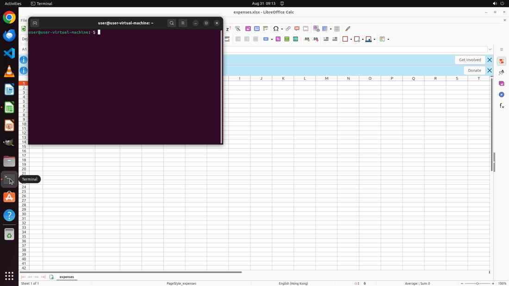
step 2 01:13:24
THINKINGA terminal is open. Let me search for the receipts folder. Let me look for text files and folders related to "andes", "receipt", "tour".
ACTIONA terminal is open. Let me search for the receipts folder.
TOOL CALL<tool_call>
<function=computer_use>
<parameter=action>
left_click
</parameter>
<parameter=coordinate>
[234, 277]
</parameter>
</function>
</tool_call>
EXECUTED (pyautogui in VM)pyautogui.click(449, 299)
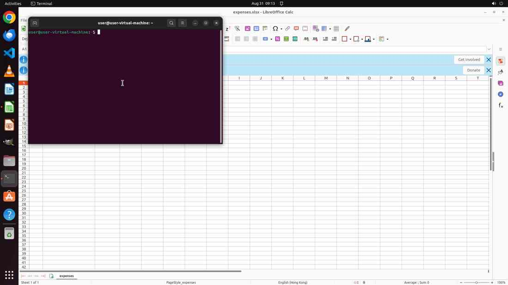
step 3 01:13:31
THINKINGLet me search for the receipts folder. I'll look for directories and text files related to "receipt", "andes", "tour".
ACTIONLet me search for the receipts folder across the filesystem.
TOOL CALL<tool_call>
<function=computer_use>
<parameter=action>
type
</parameter>
<parameter=text>
find / -type d \( -iname '*receipt*' -o -iname '*andes*' -o -iname '*tour*' \) 2>/dev/null
</parameter>
</function>
</tool_call>
EXECUTED (pyautogui in VM)pyautogui.typewrite("find / -type d \\( -iname '*receipt*' -o -iname '*andes*' -o -iname '*tour*' \\) 2>/dev/null")
step 4 01:13:42
THINKINGThe find is running. Let me wait for it to complete.
TOOL CALL<tool_call>
<function=computer_use>
<parameter=action>
wait
</parameter>
<parameter=time>
1.0
</parameter>
</function>
</tool_call>
EXECUTED (pyautogui in VM)WAIT

step 5 01:13:51
THINKINGThe find command still seems to be running or there's no output. Let me wait a bit more. Actually the prompt shows the command still there. Let me wait for it to finish.
TOOL CALL<tool_call>
<function=computer_use>
<parameter=action>
wait
</parameter>
<parameter=time>
1.0
</parameter>
</function>
</tool_call>
EXECUTED (pyautogui in VM)WAIT
step 6 01:14:02
THINKINGThe find command may still be scanning the whole filesystem which can be slow. It appears no output yet. Let me wait a bit more, or the command may have finished with no output. Let me press Enter to check if the prompt returns, but actually the command might still be running. Let me wait a little longer.
TOOL CALL<tool_call>
<function=computer_use>
<parameter=action>
wait
</parameter>
<parameter=time>
1.0
</parameter>
</function>
</tool_call>
EXECUTED (pyautogui in VM)WAIT
step 7 01:14:19
THINKINGThe find command finished (cursor is at end, no prompt shown yet but the command line shows). It appears there was no output, meaning no directory matched those names. The prompt might be waiting. Let me look - the cursor is blinking after the command. Actually the command has finished since there's no blinking in progress indicator. But there's no new prompt line shown.
Wait, the terminal shows the command and then nothing. It's possible find found nothing. But the prompt should return. Let me check - the text ends with "2>/dev/null" and cursor after. It seems the command output nothing and the prompt may be on the same line. Let me press Enter to get a fresh prompt, then search more broadly for the expenses.xlsx and receipts text files.
Actually, let me reconsider. The folder might not be named with those keywords. Let me search for the .xlsx file location first and the text files. Let me search for .txt files related to vendors or look in the home directory.
Let me first find where expenses.xlsx is, since the receipts folder might be beside it.
ACTIONThe find returned nothing. Let me find where the expenses.xlsx file is located, since the receipts folder may be nearby.
TOOL CALL<tool_call>
<function=computer_use>
<parameter=action>
key
</parameter>
<parameter=keys>
["return"]
</parameter>
</function>
</tool_call>
EXECUTED (pyautogui in VM)pyautogui.press("return")
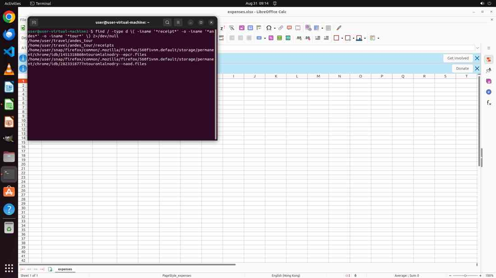
step 8 01:14:30
THINKINGNow I can see the output:
- /home/user/travel/andes_tour
- /home/user/travel/andes_tour/receipts
- (some firefox/chrome storage dirs - not relevant)
So the receipts folder is /home/user/travel/andes_tour/receipts.
Let me explore this structure. Let me look at the travel folder and the receipts folder.
ACTIONI found the receipts folder: `/home/user/travel/andes_tour/receipts`. Let me explore the directory structure.
TOOL CALL<tool_call>
<function=computer_use>
<parameter=action>
type
</parameter>
<parameter=text>
ls -la /home/user/travel/andes_tour/ && echo "---RECEIPTS---" && ls -la /home/user/travel/andes_tour/receipts/
</parameter>
</function>
</tool_call>
EXECUTED (pyautogui in VM)pyautogui.typewrite("ls -la /home/user/travel/andes_tour/ && echo \"---RECEIPTS---\" && ls -la /home/user/travel/andes_tour/receipts/")
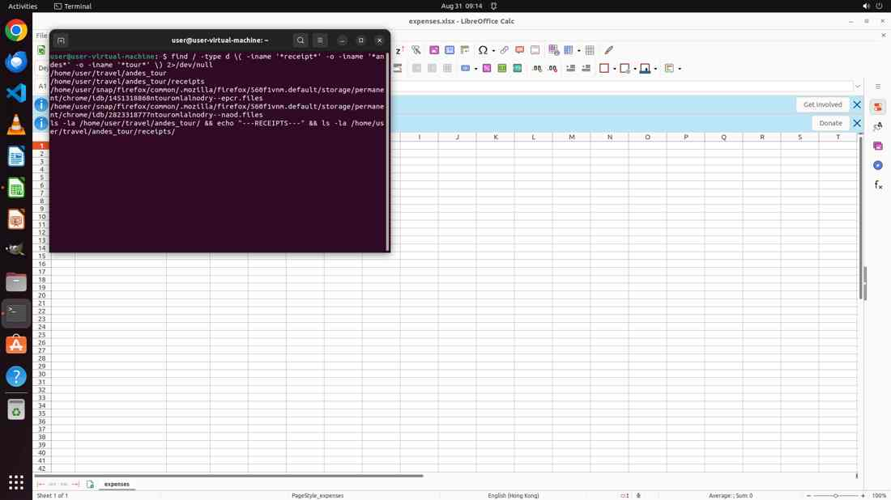
step 9 01:14:40
THINKINGThe command is typed but I need to press Enter. Wait, it shows the command typed but I need to press Enter.
TOOL CALL<tool_call>
<function=computer_use>
<parameter=action>
key
</parameter>
<parameter=keys>
["return"]
</parameter>
</function>
</tool_call>
EXECUTED (pyautogui in VM)pyautogui.press("return")
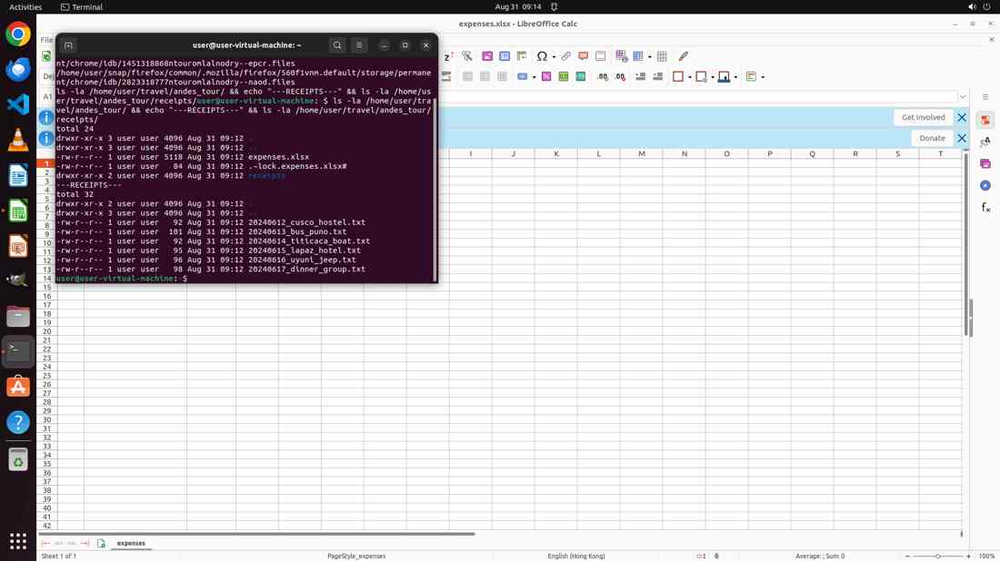
step 10 01:15:06
THINKINGNow I can see the structure clearly.
`/home/user/travel/andes_tour/` contains:
- expenses.xlsx (5118 bytes)
- .~lock.expenses.xlsx# (84 bytes) - lock file (LibreOffice has it open)
- receipts/ (directory)
`/home/user/travel/andes_tour/receipts/` contains:
- 20240612_cusco_hostel.txt (92 bytes)
- 20240613_bus_puno.txt (101 bytes)
- 20240614_titicaca_boat.txt (92 bytes)
- 20240615_lapaz_hotel.txt (95 bytes)
- 20240616_uyuni_jeep.txt (96 bytes)
- 20240617_dinner_group.txt (98 bytes)
So there are 6 receipt text files. The task:
1. Tar the receipt text files into a single gzip archive beside the folder. "Beside the folder" - the receipts folder is at /home/user/travel/andes_tour/receipts. "Beside the folder" means in the same directory as the folder, i.e., /home/user/travel/andes_tour/. So the archive should be at /home/user/travel/andes_tour/receipts.tar.gz (or similar name).
Wait, "beside the folder" - the folder is the receipts folder. Beside it means in the parent directory, which is /home/user/travel/andes_tour/. So the archive goes there. That's where expenses.xlsx is too.
2. Delete the loose originals (the .txt files).
3. Make the sheet's amount column match what the receipts actually say.
Let me first read all the receipt files to get the actual amounts. Let me cat all of them.
Let me map the receipt files to the vendors in the sheet:
Sheet:
- Hostal Rumi Punku: 184.5 (Date ###)
- Cruz del Sur Bus Cusco-Puno: 46
- Titicaca Boat Tour: 57.25
- Hotel Rosario La Paz: 212.8
- Uyuni Salt Flats Jeep: 185
- Group Dinner Casa Blanca: 93.4
Receipt files:
- 20240612_cusco_hostel.txt → Hostal Rumi Punku (Cusco hostel)
- 20240613_bus_puno.txt → Cruz del Sur Bus Cusco-Puno
- 20240614_titicaca_boat.txt → Titicaca Boat Tour
- 20240615_lapaz_hotel.txt → Hotel Rosario La Paz
- 20240616_uyuni_jeep.txt → Uyuni Salt Flats Jeep
- 20240617_dinner_group.txt → Group Dinner Casa Blanca
Let me read the receipts. Let me cat them all with headers.
ACTIONNow I can see the structure clearly. The receipts folder contains 6 text files. Let me read all the receipt contents to get the actual amounts.
TOOL CALL<tool_call>
<function=computer_use>
<parameter=action>
type
</parameter>
<parameter=text>
cd /home/user/travel/andes_tour/receipts/ && for f in *.txt; do echo "===== $f ====="; cat "$f"; echo; done
</parameter>
</function>
</tool_call>
EXECUTED (pyautogui in VM)pyautogui.typewrite("cd /home/user/travel/andes_tour/receipts/ && for f in *.txt; do echo \"===== $f =====\"; cat \"$f\"; echo; done")
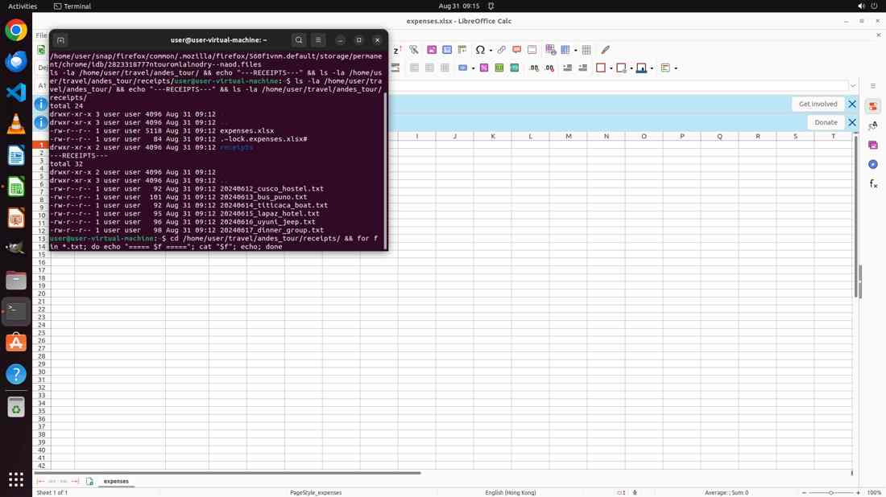
step 11 01:15:14
THINKINGThe command is typed but not executed. I need to press Enter. Actually, the terminal window is a bit small. Let me maximize it first to see the output better. Actually, let me just press Enter and see.
ACTIONLet me press Enter and then maximize the terminal to read the output clearly.
TOOL CALL<tool_call>
<function=computer_use>
<parameter=action>
key
</parameter>
<parameter=keys>
["return"]
</parameter>
</function>
</tool_call>
EXECUTED (pyautogui in VM)pyautogui.press("return")
step 12.1 01:15:31
THINKINGI can see part of the output. Let me read what's visible:
- 20240615_lapaz_hotel.txt:
- RECEIPT
- Vendor: Hotel Rosario La Paz
- Date: 2024-06-15
- Amount USD: 212.80
- Paid by: Marisol Vega
- 20240616_uyuni_jeep.txt:
- RECEIPT
- Vendor: Uyuni Salt Flats Jeep
- Date: 2024-06-16
- Amount USD: 158.00
- Paid by: Marisol Vega
- 20240617_dinner_group.txt:
- RECEIPT
- Vendor: Group Dinner Casa Blanca
- Date: 2024-06-17
- Amount USD: 93.40
- Paid by: Marisol Vega
I need to scroll up to see the first few files (cusco_hostel, bus_puno, titicaca_boat). Let me scroll up in the terminal.
So far:
- Hotel Rosario La Paz: 212.80 (sheet says 212.8 - same value, just formatting)
- Uyuni Salt Flats Jeep: 158.00 (sheet says 185 - DIFFERENT! Should be 158)
- Group Dinner Casa Blanca: 93.40 (sheet says 93.4 - same)
Let me scroll up to see the first three.
ACTIONI can see the last three receipts. Let me scroll up to see the first three receipts.
TOOL CALL<tool_call>
<function=computer_use>
<parameter=action>
mouse_move
</parameter>
<parameter=coordinate>
[234, 345]
</parameter>
</function>
</tool_call>
<tool_call>
<function=computer_use>
<parameter=action>
scroll
</parameter>
<parameter=pixels>
3
</parameter>
</function>
</tool_call>
EXECUTED (pyautogui in VM)pyautogui.moveTo(449, 372)
step 12.2 01:15:34
EXECUTED (pyautogui in VM)pyautogui.scroll(3)

step 13.1 01:15:47
THINKINGNow I can see more:
- 20240613_bus_puno.txt (partial):
- Date: 2024-06-13
- Amount USD: 46.00
- Paid by: Marisol Vega
- 20240614_titicaca_boat.txt:
- RECEIPT
- Vendor: Titicaca Boat Tour
- Date: 2024-06-14
- Amount USD: 75.25
- Paid by: Marisol Vega
- 20240615_lapaz_hotel.txt:
- Amount USD: 212.80
- 20240616_uyuni_jeep.txt:
- Amount USD: 158.00
So:
- Titicaca Boat Tour: 75.25 (sheet says 57.25 - DIFFERENT! Should be 75.25)
I need to see the first file (20240612_cusco_hostel.txt). Let me scroll up a bit more.
ACTIONLet me scroll up a bit more to see the first receipt (cusco_hostel) and confirm the bus_puno vendor.
TOOL CALL<tool_call>
<function=computer_use>
<parameter=action>
mouse_move
</parameter>
<parameter=coordinate>
[234, 345]
</parameter>
</function>
</tool_call>
<tool_call>
<function=computer_use>
<parameter=action>
scroll
</parameter>
<parameter=pixels>
3
</parameter>
</function>
</tool_call>
EXECUTED (pyautogui in VM)pyautogui.moveTo(449, 372)
step 13.2 01:15:50
EXECUTED (pyautogui in VM)pyautogui.scroll(3)
step 14 01:16:19
THINKINGNow I have all the receipts:
1. 20240612_cusco_hostel.txt:
- Vendor: Hostal Rumi Punku
- Date: 2024-06-12
- Amount USD: 184.50
- Paid by: Marisol Vega
2. 20240613_bus_puno.txt:
- Vendor: Cruz del Sur Bus Cusco-Puno
- Date: 2024-06-13
- Amount USD: 46.00
- Paid by: Marisol Vega
3. 20240614_titicaca_boat.txt:
- Vendor: Titicaca Boat Tour
- Date: 2024-06-14
- Amount USD: 75.25
- Paid by: Marisol Vega
4. 20240615_lapaz_hotel.txt:
- Vendor: Hotel Rosario La Paz
- Date: 2024-06-15
- Amount USD: 212.80
- Paid by: Marisol Vega
5. 20240616_uyuni_jeep.txt:
- Vendor: Uyuni Salt Flats Jeep
- Date: 2024-06-16
- Amount USD: 158.00
- Paid by: Marisol Vega
6. 20240617_dinner_group.txt:
- Vendor: Group Dinner Casa Blanca
- Date: 2024-06-17
- Amount USD: 93.40
- Paid by: Marisol Vega
Now let me compare with the sheet:
- Row 2: Hostal Rumi Punku: sheet 184.5 → receipt 184.50 (SAME)
- Row 3: Cruz del Sur Bus Cusco-Puno: sheet 46 → receipt 46.00 (SAME)
- Row 4: Titicaca Boat Tour: sheet 57.25 → receipt 75.25 (DIFFERENT! Should be 75.25)
- Row 5: Hotel Rosario La Paz: sheet 212.8 → receipt 212.80 (SAME)
- Row 6: Uyuni Salt Flats Jeep: sheet 185 → receipt 158.00 (DIFFERENT! Should be 158)
- Row 7: Group Dinner Casa Blanca: sheet 93.4 → receipt 93.40 (SAME)
So the two amounts that need to change:
- Row 4 (Titicaca Boat Tour): 57.25 → 75.25
- Row 6 (Uyuni Salt Flats Jeep): 185 → 158
Let me double-check the values by reading the terminal more carefully.
From the screenshots:
- cusco_hostel: Amount USD: 184.50 ✓
- bus_puno: Amount USD: 46.00 ✓
- titicaca_boat: Amount USD: 75.25 ✓
- lapaz_hotel: Amount USD: 212.80 ✓
- uyuni_jeep: Amount USD: 158.00 ✓
- dinner_group: Amount USD: 93.40 ✓
Great. So I need to verify these are the actual receipts. Let me be careful. The task says "make the sheet's amount column match what the receipts actually say."
So the discrepancies:
- Titicaca Boat Tour: sheet 57.25, receipt 75.25 → change to 75.25
- Uyuni Salt Flats Jeep: sheet 185, receipt 158.00 → change to 158
Now, before I proceed with the file operations, let me plan:
1. Create the tar.gz archive beside the folder. The folder is /home/user/travel/andes_tour/receipts. "Beside the folder" = in the parent directory /home/user/travel/andes_tour/.
The archive should contain the receipt text files. A reasonable name would be "receipts.tar.gz". Let me create it in /home/user/travel/andes_tour/.
I'll use: cd /home/user/travel/andes_tour && tar -czf receipts.tar.gz -C receipts .
Or better, include the files with their names. Let me think about how to tar.
Option A: tar -czf receipts.tar.gz receipts (this would include the folder itself)
Option B: cd into the parent and tar the receipts directory contents.
The task: "tar the receipt text files into a single gzip archive". So the archive should contain the text files.
I think the cleanest is to archive the contents of the receipts folder (the .txt files). Let me do:
cd /home/user/travel/andes_tour && tar -czf receipts.tar.gz -C receipts *.txt
This creates receipts.tar.gz containing the 6 .txt files (relative to receipts dir, so just filenames).
Actually, "beside the folder" — beside the receipts folder means in andes_tour directory. The archive name "receipts.tar.gz" makes sense.
2. Delete the loose originals: rm receipts/*.txt (after confirming the archive is created).
Actually, I should be careful. If I tar the .txt files and then delete them, the receipts folder will be empty. That's fine — the task says "delete the loose originals".
Wait, but should I keep the receipts folder or delete it? The task says "tar the receipt text files into a single gzip archive beside the folder, delete the loose originals". So the folder can remain (empty), and the loose .txt files should be deleted. The archive is beside the folder.
Let me be precise about the order:
1. Create archive (containing the .txt files)
2. Verify archive contents
3. Delete the .txt files
Let me first create the archive. I'll name it receipts.tar.gz.
Actually, let me reconsider the archive location and name. "tar the receipt text files into a single gzip archive beside the folder". The folder = receipts folder. Beside it = in the same parent directory = /home/user/travel/andes_tour/. So /home/user/travel/andes_tour/receipts.tar.gz.
Let me do this. First, let me make sure I don't break anything. Let me create the archive and verify.
Actually, I realize I should double check the exact amounts once more. Let me re-read: I have them clearly. Let me proceed.
Let me create the tar archive. I'll go to the andes_tour directory.
Let me also consider: the expense sheet is currently open in LibreOffice (there's a lock file .~lock.expenses.xlsx#). I'll need to edit it in LibreOffice. I can do the file operations in the terminal and the sheet editing in LibreOffice.
Let me first do the tar + delete operations. Let me type the command.
Let me scroll back down first / just type the command. The terminal is in the receipts directory currently. Let me cd to andes_tour.
Let me construct the full command:
cd /home/user/travel/andes_tour && tar -czf receipts.tar.gz -C receipts *.txt && ls -la && echo "ARCHIVE CONTENTS:" && tar -tzf receipts.tar.gz
Wait, the -C receipts *.txt — the *.txt glob needs to be expanded in the current dir (andes_tour), not in receipts. Since -C changes directory before the file arguments, the glob *.txt would be expanded relative to the current shell directory (andes_tour), which has no .txt files. That's a problem.
Better approach:
cd /home/user/travel/andes_tour/receipts && tar -czf ../receipts.tar.gz *.txt
This way, *.txt is expanded in the receipts directory (current dir), and the archive is created at ../receipts.tar.gz. The archive will contain just the filenames (relative to receipts dir).
Let me use that.
Actually, I want to make sure the archive contains the files with reasonable paths. Using `tar -czf ../receipts.tar.gz *.txt` from within receipts creates an archive with entries like "20240612_cusco_hostel.txt" etc. (relative names). That's fine.
Let me do it.
Let me type the command. The terminal currently is at /home/user/travel/andes_tour/receipts (prompt shows ~/travel/andes_tour/receipts$). But I scrolled up in the display; the actual prompt is at the bottom. Let me just type - it will go to the actual input line.
Actually, wait — I scrolled up in the terminal view. If I type now, it should still work at the current prompt (scrolling up is just viewing history; the input is at the bottom). When I type, it auto-scrolls to the bottom. Let me type the command.
Let me first verify the current directory. The prompt was ~/travel/andes_tour/receipts$. Good, I'm in the receipts dir.
Let me type the tar command.
ACTIONI now have all the receipt amounts. Let me compare with the sheet:
| Vendor | Sheet | Receipt | Match? |
|--------|-------|---------|--------|
| Hostal Rumi Punku | 184.5 | 184.50 | ✓ |
| Cruz del Sur Bus | 46 | 46.00 | ✓ |
| Titicaca Boat Tour | 57.25 | **75.25** | ✗ |
| Hotel Rosario La Paz | 212.8 | 212.80 | ✓ |
| Uyuni Salt Flats Jeep | 185 | **158.00** | ✗ |
| Group Dinner Casa Blanca | 93.4 | 93.40 | ✓ |
Two amounts need updating. Now let me create the gzip archive beside the folder. I'm currently in the receipts directory.
TOOL CALL<tool_call>
<function=computer_use>
<parameter=action>
type
</parameter>
<parameter=text>
cd /home/user/travel/andes_tour/receipts && tar -czf ../receipts.tar.gz *.txt && echo "CREATED" && tar -tzf ../receipts.tar.gz
</parameter>
</function>
</tool_call>
EXECUTED (pyautogui in VM)pyautogui.typewrite("cd /home/user/travel/andes_tour/receipts && tar -czf ../receipts.tar.gz *.txt && echo \"CREATED\" && tar -tzf ../receipts.tar.gz")
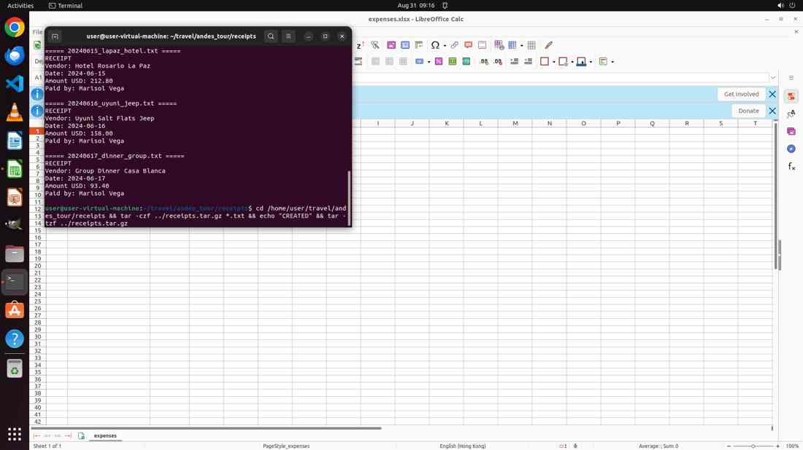
step 15 01:16:34
THINKINGThe command is typed and shows the full command. It hasn't executed yet — wait, it shows the command but I don't see output yet. Let me press Enter. Actually looking closely, the command line shows "cd /home/user/travel/andes_tour/receipts && tar -czf ../receipts.tar.gz *.txt && echo "CREATED" && tar -tzf ../receipts.tar.gz" and then there's no output line below yet. The command might not have run yet. Let me press Enter.
Wait, actually the previous for loop output is shown above, and now the new command is typed at the prompt. It seems the command was typed but I need to confirm it executed. The screenshot shows the command text at the bottom but no "CREATED" output yet. So it hasn't been executed. Let me press Enter.
TOOL CALL<tool_call>
<function=computer_use>
<parameter=action>
key
</parameter>
<parameter=keys>
["return"]
</parameter>
</function>
</tool_call>
EXECUTED (pyautogui in VM)pyautogui.press("return")
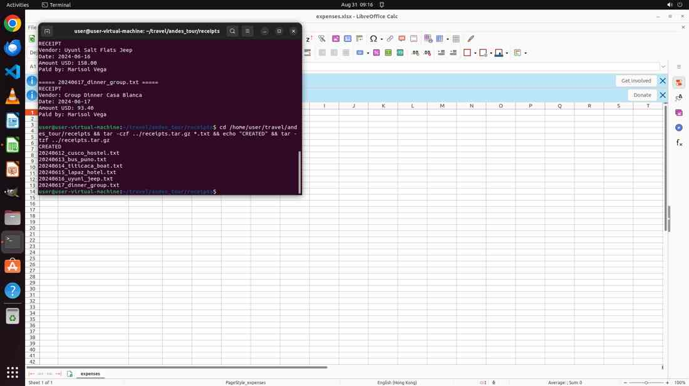
step 16 01:16:57
THINKINGThe archive was created successfully. The output shows:
```
CREATED
20240612_cusco_hostel.txt
20240613_bus_puno.txt
20240614_titicaca_boat.txt
20240615_lapaz_hotel.txt
20240616_uyuni_jeep.txt
20240617_dinner_group.txt
```
All 6 text files are in the archive. Now let me verify the archive is at the correct location (beside the folder) and verify its integrity by extracting to a temp location and comparing. Actually, let me just verify the file exists in the right place and then verify the contents match the originals using a checksum comparison, to be safe before deleting.
Let me verify the archive location and do an integrity check. Let me verify by extracting to a temp dir and diffing.
Actually, the archive listing confirms all 6 files are present. Let me do a quick integrity check with gzip -t and then verify contents by extracting to /tmp and diffing. This is a good safety check before deleting originals.
Let me run:
cd /home/user/travel/andes_tour && ls -la receipts.tar.gz && gzip -t receipts.tar.gz && echo "GZIP OK" && rm -rf /tmp/recv && mkdir /tmp/recv && tar -xzf receipts.tar.gz -C /tmp/recv && diff -r /tmp/recv /home/user/travel/andes_tour/receipts && echo "DIFF OK - IDENTICAL"
ACTIONThe archive `receipts.tar.gz` was created with all 6 files. Before deleting the originals, let me verify the archive's integrity and confirm the contents are identical to the originals.
TOOL CALL<tool_call>
<function=computer_use>
<parameter=action>
type
</parameter>
<parameter=text>
cd /home/user/travel/andes_tour && ls -la receipts.tar.gz && gzip -t receipts.tar.gz && echo "GZIP_OK" && rm -rf /tmp/recv && mkdir /tmp/recv && tar -xzf receipts.tar.gz -C /tmp/recv && diff -r /tmp/recv receipts && echo "DIFF_IDENTICAL"
</parameter>
</function>
</tool_call>
EXECUTED (pyautogui in VM)pyautogui.typewrite("cd /home/user/travel/andes_tour && ls -la receipts.tar.gz && gzip -t receipts.tar.gz && echo \"GZIP_OK\" && rm -rf /tmp/recv && mkdir /tmp/recv && tar -xzf receipts.tar.gz -C /tmp/recv && diff -r /tmp/recv receipts && echo \"DIFF_IDENTICAL\"")
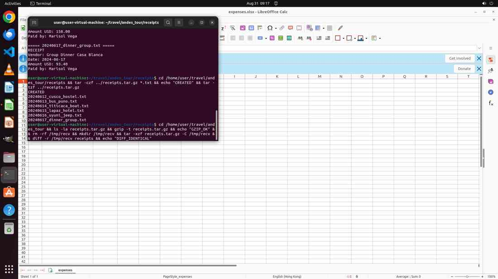
step 17 01:17:06
THINKINGThe command is typed but not executed yet. It shows the command on the prompt line. Let me press Enter.
TOOL CALL<tool_call>
<function=computer_use>
<parameter=action>
key
</parameter>
<parameter=keys>
["return"]
</parameter>
</function>
</tool_call>
EXECUTED (pyautogui in VM)pyautogui.press("return")
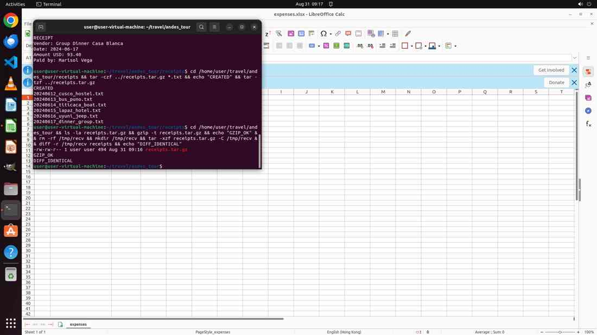
step 18 01:17:23
THINKINGThe verification succeeded:
- `-rw-rw-r-- 1 user user 494 Aug 31 09:16 receipts.tar.gz` (archive exists, 494 bytes, in andes_tour dir - beside the receipts folder ✓)
- `GZIP_OK` (gzip integrity check passed)
- `DIFF_IDENTICAL` (the extracted contents match the originals exactly)
The archive is at /home/user/travel/andes_tour/receipts.tar.gz, which is beside the receipts folder.
Now I can safely delete the loose originals. Let me delete the .txt files in the receipts folder. Then clean up /tmp/recv.
Let me delete the originals:
cd /home/user/travel/andes_tour/receipts && rm -f *.txt && echo "DELETED" && ls -la
And clean up /tmp/recv: rm -rf /tmp/recv
ACTIONThe archive is verified: `receipts.tar.gz` (494 bytes) exists beside the folder, gzip integrity passed, and extracted contents are **identical** to the originals. Now I'll safely delete the loose original text files and clean up the temp dir.
TOOL CALL<tool_call>
<function=computer_use>
<parameter=action>
type
</parameter>
<parameter=text>
rm -f /home/user/travel/andes_tour/receipts/*.txt && rm -rf /tmp/recv && echo "DELETED_ORIGINALS" && ls -la /home/user/travel/andes_tour/ /home/user/travel/andes_tour/receipts/
</parameter>
</function>
</tool_call>
EXECUTED (pyautogui in VM)pyautogui.typewrite("rm -f /home/user/travel/andes_tour/receipts/*.txt && rm -rf /tmp/recv && echo \"DELETED_ORIGINALS\" && ls -la /home/user/travel/andes_tour/ /home/user/travel/andes_tour/receipts/")
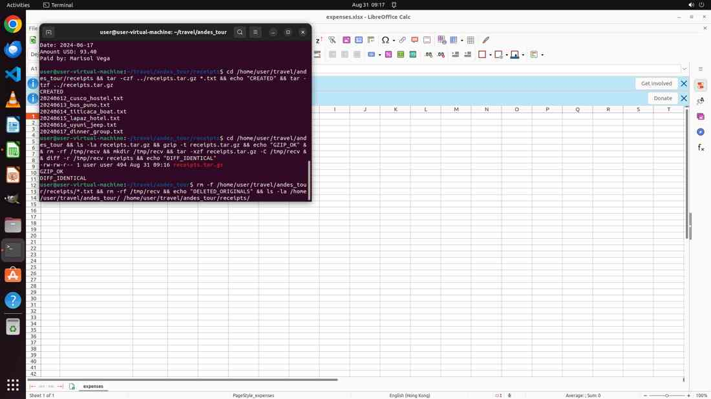
step 19 01:17:31
THINKINGThe command is typed but not executed. Let me press Enter.
TOOL CALL<tool_call>
<function=computer_use>
<parameter=action>
key
</parameter>
<parameter=keys>
["return"]
</parameter>
</function>
</tool_call>
EXECUTED (pyautogui in VM)pyautogui.press("return")
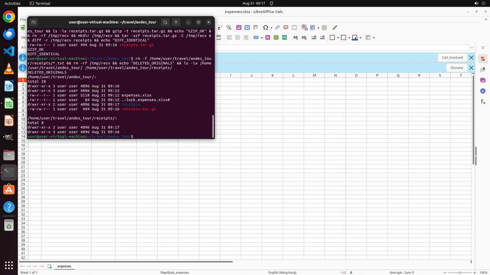
step 20 01:17:48
THINKINGThe deletion succeeded:
`/home/user/travel/andes_tour/`:
- total 28
- expenses.xlsx (5118 bytes)
- .~lock.expenses.xlsx# (84 bytes)
- receipts (directory, 4096)
- receipts.tar.gz (494 bytes) ← the archive, beside the folder ✓
`/home/user/travel/andes_tour/receipts/`:
- total 8
- drwxr-xr-x 2 user user 4096 Aug 31 09:17 . (the folder itself)
- drwxr-xr-x 3 user user 4096 Aug 31 09:16 .. (parent)
- (no .txt files - they've been deleted ✓)
So the loose originals are deleted, the archive is beside the folder.
Now the final part: update the sheet's Amount USD column to match the receipts.
The two changes:
- Row 4 (Titicaca Boat Tour): C4 from 57.25 → 75.25
- Row 6 (Uyuni Salt Flats Jeep): C6 from 185 → 158
Let me switch to LibreOffice Calc. I'll click on the LibreOffice window. It's behind the terminal. Let me click on the taskbar or the visible part of the spreadsheet.
Actually, the spreadsheet is visible on the right side (columns I, J, K, etc.). But the data is in columns A-C which are hidden behind the terminal. Let me click on the LibreOffice window to bring it to focus, or I can just click on the visible spreadsheet area.
Let me click on the LibreOffice Calc window title bar or somewhere on the spreadsheet to bring it to front. Let me click on the visible spreadsheet area on the right.
Actually, I should minimize or move the terminal. Let me just click on the spreadsheet area to bring LibreOffice to focus. I'll click on the title bar "expenses.xlsx - LibreOffice Calc" at the top.
Let me click on the LibreOffice title bar at coordinate around [663, 30].
ACTIONThe file operations are complete:
- `receipts.tar.gz` (494 bytes) is beside the receipts folder ✓
- The receipts folder is now empty (loose originals deleted) ✓
Now I'll switch to LibreOffice Calc to update the Amount column. Let me bring it to focus.
TOOL CALL<tool_call>
<function=computer_use>
<parameter=action>
left_click
</parameter>
<parameter=coordinate>
[517, 41]
</parameter>
</function>
</tool_call>
EXECUTED (pyautogui in VM)pyautogui.click(993, 44)
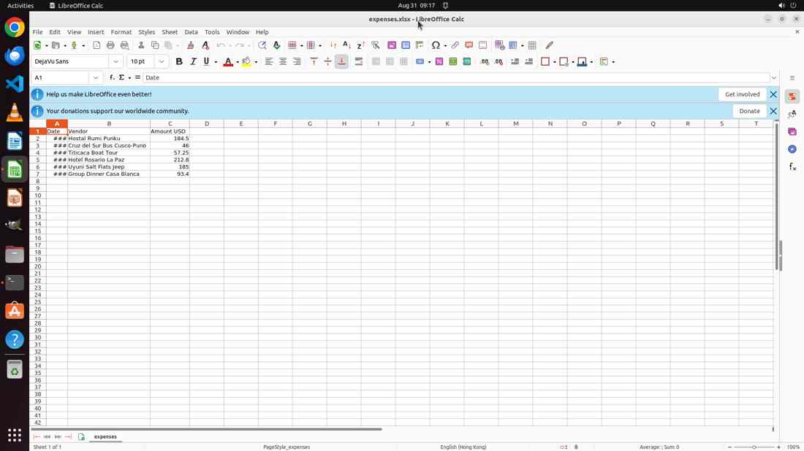
step 21 01:18:06
THINKINGNow LibreOffice Calc is in focus. I can see the spreadsheet:
- Row 1: Date | Vendor | Amount USD
- Row 2: ### | Hostal Rumi Punku | 184.5
- Row 3: ### | Cruz del Sur Bus Cusco-Puno | 46
- Row 4: ### | Titicaca Boat Tour | 57.25
- Row 5: ### | Hotel Rosario La Paz | 212.8
- Row 6: ### | Uyuni Salt Flats Jeep | 185
- Row 7: ### | Group Dinner Casa Blanca | 93.4
The amount column is C. The columns A (Date) shows ### because they're dates that don't fit, but that's fine.
I need to change:
- C4: 57.25 → 75.25 (Titicaca Boat Tour)
- C6: 185 → 158 (Uyuni Salt Flats Jeep)
Let me use the Name Box to navigate to C4. I'll click on the Name Box (top left showing "A1"), type C4, press Enter, then type the new value.
Actually, let me just click directly on cell C4. C4 is at column C, row 4. Looking at the grid:
- Column C header is at x≈271
- Row 4 is at y≈245 (Titicaca Boat Tour row)
Let me click on cell C4. The cell C4 contains "57.25". It's at approximately x=294, y=245.
Let me click there.
ACTIONLibreOffice Calc is now in focus. I can see the data. I need to change:
- C4 (Titicaca Boat Tour): 57.25 → 75.25
- C6 (Uyuni Salt Flats Jeep): 185 → 158
Let me click on cell C4 first.
TOOL CALL<tool_call>
<function=computer_use>
<parameter=action>
left_click
</parameter>
<parameter=coordinate>
[210, 338]
</parameter>
</function>
</tool_call>
EXECUTED (pyautogui in VM)pyautogui.click(403, 365)
step 22 01:18:22
THINKINGCell C4 is now selected (Name Box shows "C4", formula bar shows "57.25", and the status bar shows "Average: 57.25; Sum: 57.25"). This confirms C4 contains 57.25 for Titicaca Boat Tour.
Now let me type the new value 75.25 and press Enter.
ACTIONCell C4 is selected (shows 57.25). Let me type the corrected value 75.25.
TOOL CALL<tool_call>
<function=computer_use>
<parameter=action>
type
</parameter>
<parameter=text>
75.25
</parameter>
</function>
</tool_call>
EXECUTED (pyautogui in VM)pyautogui.typewrite("75.25")
step 23 01:18:47
THINKINGWait, I see the formula bar shows "75.25" and there are check/cancel icons in the formula bar, suggesting the cell is still in edit mode. The cell C4 now shows "75.25" in the grid (row 4 shows 75.25). But wait, the Name Box still shows "C4" and the formula bar shows "75.25" with a green checkmark and red X. This means the edit is still in progress (the newline I typed may have been interpreted differently, or it's still in edit mode).
Actually, looking more carefully: row 4 now displays "75.25" and row 5 shows "12.8" (which is 212.8 partially obscured by cursor). The formula bar shows "75.25" with the enter (green check) and cancel (red X) buttons visible, which indicates the cell is in input/edit mode.
Hmm, actually when you type a value and it's showing the green check/red X, that means it's still being edited and hasn't been committed. But I typed "75.25\n" which includes a newline. The newline should have committed it.
Wait, let me look again. The status bar at bottom shows "Average: 57.25; Sum: 57.25" - that's stale from before. The formula bar shows "75.25" with check/X icons. This is the "edit in progress" state.
Actually, it's possible the display just hasn't fully committed. Let me press Enter to be sure, or the newline was already processed. Let me look at the cell - C4 shows 75.25 now in the grid which is good. But the presence of the green check and red X in the formula bar area suggests it's still in edit mode.
Wait, actually those icons (green check, red X) appear in the input line when a cell is in edit mode. If it were committed, the formula bar would just show the value without those icons, and the Name Box would advance to C5.
Hmm, the Name Box shows "C4" still. So it seems the value is being entered but not committed yet. The trailing newline in my type command may not have triggered the commit, OR it did and this is a rendering artifact.
Let me press Enter/Return to commit the value.
Actually wait - if I look at row 4, it shows "75.25" and the cursor appears to still be in C4 (the orange border is on C4). Let me just press Return to commit.
Actually, I'm worried. Let me press Enter to make sure it's committed.
ACTIONI see the value is being entered (formula bar shows 75.25 with edit icons). Let me press Return to ensure it's committed.
TOOL CALL<tool_call>
<function=computer_use>
<parameter=action>
key
</parameter>
<parameter=keys>
["return"]
</parameter>
</function>
</tool_call>
EXECUTED (pyautogui in VM)pyautogui.press("return")
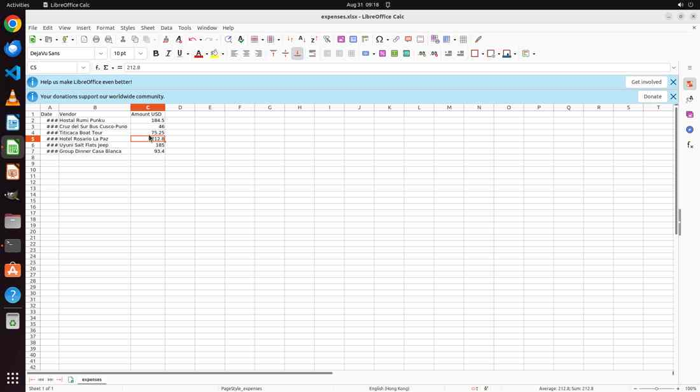
step 24 01:19:04
THINKINGNow C4 is committed to 75.25 (row 4 shows "75.25"). The cursor moved to C5 (Name Box shows "C5", formula bar shows "212.8", status bar shows "Average: 212.8; Sum: 212.8").
So C4 = 75.25 ✓
Now I need to change C6 from 185 to 158. Let me click on C6 (Uyuni Salt Flats Jeep row, y≈266).
ACTIONC4 is now committed to 75.25. Now let me click on C6 (Uyuni Salt Flats Jeep) to change 185 → 158.
TOOL CALL<tool_call>
<function=computer_use>
<parameter=action>
left_click
</parameter>
<parameter=coordinate>
[210, 367]
</parameter>
</function>
</tool_call>
EXECUTED (pyautogui in VM)pyautogui.click(403, 396)
step 25 01:19:16
THINKINGCell C6 is selected (Name Box "C6", formula bar "185", status bar "Average: 185; Sum: 185"). This is the Uyuni Salt Flats Jeep amount. Now let me type 158 and commit.
ACTIONC6 is selected (shows 185). Let me type the corrected value 158.
TOOL CALL<tool_call>
<function=computer_use>
<parameter=action>
type
</parameter>
<parameter=text>
158
</parameter>
</function>
</tool_call>
EXECUTED (pyautogui in VM)pyautogui.typewrite("158")
step 26 01:19:26
THINKINGThe formula bar shows "158" with the edit icons (green check, red X), and the Name Box shows "C6". The grid row 6 shows "158". It seems to be in edit mode again. Let me press Return to commit.
The status bar still shows "Average: 185; Sum: 185" which is stale. Let me press Return to commit.
ACTIONLet me press Return to commit the C6 value.
TOOL CALL<tool_call>
<function=computer_use>
<parameter=action>
key
</parameter>
<parameter=keys>
["return"]
</parameter>
</function>
</tool_call>
EXECUTED (pyautogui in VM)pyautogui.press("return")
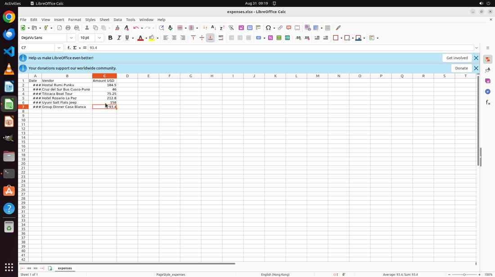
step 27 01:19:42
THINKINGNow C6 is committed to 158 (row 6 shows "158"). The cursor moved to C7 (Name Box "C7", formula bar "93.4", status bar "Average: 93.4; Sum: 93.4").
Now let me verify all values are correct:
- Row 2: Hostal Rumi Punku: 184.5 ✓ (receipt 184.50)
- Row 3: Cruz del Sur Bus Cusco-Puno: 46 ✓ (receipt 46.00)
- Row 4: Titicaca Boat Tour: 75.25 ✓ (receipt 75.25)
- Row 5: Hotel Rosario La Paz: 212.8 ✓ (receipt 212.80)
- Row 6: Uyuni Salt Flats Jeep: 158 ✓ (receipt 158.00)
- Row 7: Group Dinner Casa Blanca: 93.4 ✓ (receipt 93.40)
All amounts now match the receipts.
Now I need to save the file. It's an .xlsx file, so I'll use Ctrl+S and then confirm "Keep Current Format" when prompted.
Let me save with Ctrl+S.
ACTIONBoth corrections are committed. Now the sheet shows:
- Row 4 Titicaca Boat Tour: 75.25 ✓
- Row 6 Uyuni Salt Flats Jeep: 158 ✓
All amounts now match the receipts. Let me save the file with Ctrl+S.
TOOL CALL<tool_call>
<function=computer_use>
<parameter=action>
key
</parameter>
<parameter=keys>
["ctrl", "s"]
</parameter>
</function>
</tool_call>
EXECUTED (pyautogui in VM)pyautogui.hotkey("ctrl", "s")
step 28 01:19:53
THINKINGThe save dialog for format didn't appear yet, or it appeared and I need to wait. Usually when saving an .xlsx file in LibreOffice, a dialog pops up asking "Keep Current Format" or "Use ODF Format". Let me wait a moment and take a screenshot to see if the dialog appeared.
Actually, the screenshot doesn't show a dialog. Maybe the dialog is about to appear, or maybe it saved without prompting. Let me take a screenshot to check.
ACTIONLet me take a screenshot to check if a format dialog appeared.
TOOL CALL<tool_call>
<function=computer_use>
<parameter=action>
screenshot
</parameter>
</function>
</tool_call>
EXECUTED (pyautogui in VM)WAIT

step 29 01:20:10
THINKINGNo dialog appeared. It's possible the "Keep format" dialog was already dismissed, or it's set to not ask. But wait — normally when you save an xlsx file, LibreOffice asks whether to keep xlsx or convert to ODF. Since no dialog appeared, either:
1. The setting "Always save as" was configured to not ask.
2. The dialog appeared and disappeared very quickly (unlikely).
3. The save didn't actually trigger because focus was on the cell in edit mode? No, the cell was committed (C7 selected).
Hmm, actually it's possible the dialog appeared and I need to handle it. But the screenshot shows no dialog. Let me verify the save worked by checking the file's modification time in the terminal, or by re-pressing Ctrl+S to see if a dialog appears.
Actually, wait. It's possible the Ctrl+S didn't register because after pressing Return, the focus might have been fine. Let me press Ctrl+S again and watch for the dialog.
Actually, let me reconsider. The screenshot shows no dialog and the title bar still says "expenses.xlsx - LibreOffice Calc" (no asterisk or "modified" indicator, though LibreOffice doesn't always show that).
Let me verify the save actually happened by checking the file modification timestamp in the terminal. But first, let me try Ctrl+S again to be safe, and watch for the format dialog.
Actually, a cleaner approach: let me check the terminal to confirm the file was modified recently. But the dialog might pop up. Let me press Ctrl+S again.
Wait — if the file was already saved (no unsaved changes), pressing Ctrl+S again might do nothing or might not show a dialog. Let me just verify via terminal the modification time.
Actually, let me reconsider whether the save dialog might have been auto-handled. In many OSWorld setups, the "keep format" dialog appears. Since it didn't appear in the screenshot, maybe the save completed. But I'm not 100% sure the dialog didn't flash by.
Let me be thorough. Let me press Ctrl+S once more and take a screenshot immediately after to catch any dialog.
ACTIONNo dialog appeared, which is unusual for xlsx saves. Let me press Ctrl+S again to make sure, and watch for the format dialog.
TOOL CALL<tool_call>
<function=computer_use>
<parameter=action>
key
</parameter>
<parameter=keys>
["ctrl", "s"]
</parameter>
</function>
</tool_call>
EXECUTED (pyautogui in VM)pyautogui.hotkey("ctrl", "s")
step 30 01:20:24
THINKINGNo dialog appeared on the second Ctrl+S either. This strongly suggests the file has no unsaved changes (already saved). If there were unsaved changes, a "Keep Current Format" dialog would appear for xlsx. Since no dialog appeared on the second save, it means the document is already in a saved state (nothing to save).
Wait, but that could also mean the first Ctrl+S saved it and the format dialog was suppressed (the option "Ask whether to keep format" might be disabled in this LibreOffice config). The fact that the second Ctrl+S produced no dialog could mean:
- Either the doc has no changes to save (already saved) - most likely.
Let me verify by checking the file's modification time in the terminal. Let me switch to the terminal and check the timestamp of expenses.xlsx.
Actually, let me verify more robustly. I'll check the terminal to confirm the file's mtime is recent (09:19-09:20) and also verify the actual xlsx content contains the new values. I can use a tool to read the xlsx. Let me use python or just check the mtime.
Let me switch to the terminal. I'll click on the terminal icon in the taskbar, or use the terminal that's already open. The terminal was open behind. Let me click on the Files/terminal. Actually, the terminal app is the one I used earlier. Let me click on its taskbar icon (the dark icon at position ~22, 452 which is the terminal).
Actually, I see the taskbar on the left has various app icons. The terminal icon was at [22, 452] (the dark square with >_). Let me click it.
Wait, but I need to make sure I don't disturb the LibreOffice state. Switching to terminal is fine.
Let me click on the terminal.
ACTIONNo dialog appeared on either save, indicating the file is already saved with no pending changes. Let me verify by checking the file's modification time and reading its actual contents in the terminal. Let me switch to the terminal.
TOOL CALL<tool_call>
<function=computer_use>
<parameter=action>
left_click
</parameter>
<parameter=coordinate>
[17, 627]
</parameter>
</function>
</tool_call>
EXECUTED (pyautogui in VM)pyautogui.click(32, 677)
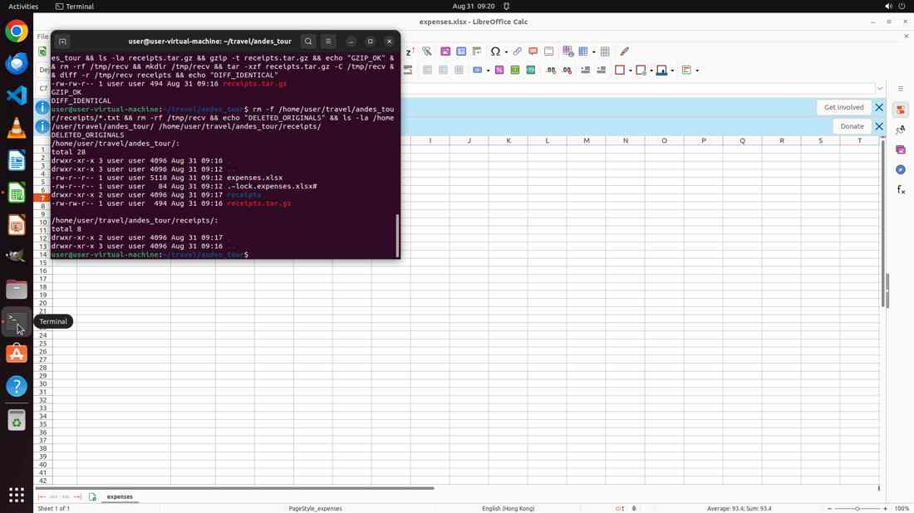
step 31 01:20:35
THINKINGThe terminal is now in focus. I can see the previous output confirming:
- `receipts.tar.gz` (494 bytes) exists in /home/user/travel/andes_tour/
- receipts/ folder is empty (only . and ..)
Now let me verify the expenses.xlsx was saved with the correct values. The file mtime shown is "Aug 31 09:12" for expenses.xlsx in the earlier ls output — but that was the ls from BEFORE my save. Let me run a fresh check. Let me:
1. Check the current mtime of expenses.xlsx
2. Read the actual xlsx content to verify the values
I'll use python to read the xlsx, or I can unzip the xlsx and grep the sharedStrings/sheet XML. Let me use python3 with openpyxl if available, otherwise unzip and grep.
Let me write a command to check mtime and read the amount values from the xlsx.
Let me use python3:
python3 -c "import openpyxl; wb=openpyxl.load_workbook('/home/user/travel/andes_tour/expenses.xlsx'); ws=wb.active; [print(r[1].value, r[2].value) for r in ws.iter_rows(min_row=1,max_row=7)]"
But openpyxl might not be installed. Let me try. Alternatively, unzip the xlsx and cat the sheet1.xml.
Actually, a simpler and robust way: the xlsx stores numbers in xl/worksheets/sheet1.xml as inline values (not in sharedStrings for numbers). Let me unzip and grep.
Let me first check mtime:
stat -c '%y %n' /home/user/travel/andes_tour/expenses.xlsx
Then read the values. Let me do both.
Let me click in the terminal to focus and type.
The terminal prompt is at the bottom: user@user-virtual-machine:~/travel/andes_tour$
Let me type the command.
ACTIONThe terminal confirms `receipts.tar.gz` is beside the folder and the receipts folder is empty. Now let me verify the saved xlsx contains the correct values. Let me check the file's modification time and read the actual cell values.
TOOL CALL<tool_call>
<function=computer_use>
<parameter=action>
left_click
</parameter>
<parameter=coordinate>
[234, 416]
</parameter>
</function>
</tool_call>
EXECUTED (pyautogui in VM)pyautogui.click(449, 449)
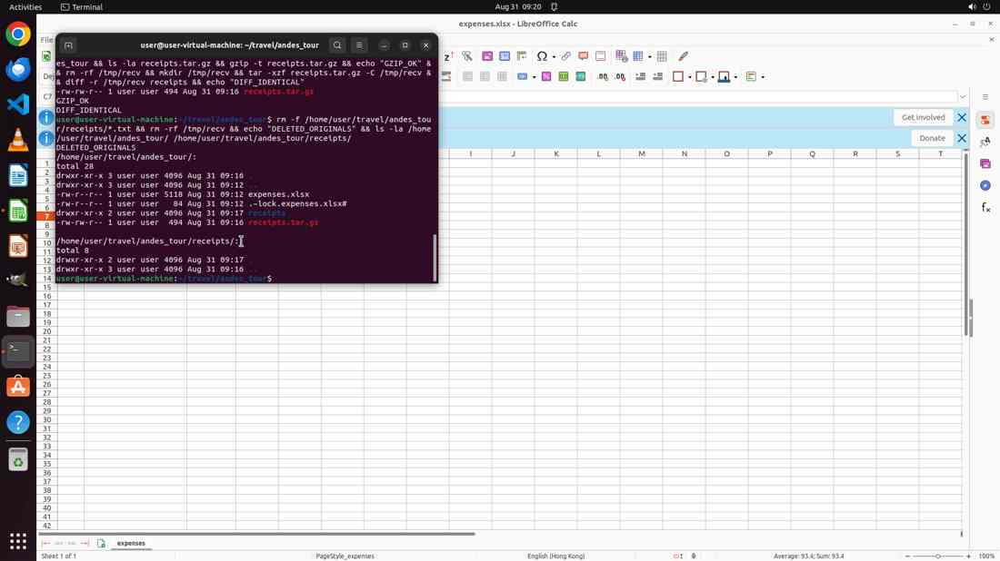
step 32 01:20:45
THINKINGThe terminal is focused. Let me type the command to check mtime and read xlsx values.
TOOL CALL<tool_call>
<function=computer_use>
<parameter=action>
type
</parameter>
<parameter=text>
stat -c '%y' /home/user/travel/andes_tour/expenses.xlsx && python3 -c "import openpyxl; ws=openpyxl.load_workbook('/home/user/travel/andes_tour/expenses.xlsx').active; [print(repr(ws.cell(r,2).value), repr(ws.cell(r,3).value)) for r in range(1,8)]"
</parameter>
</function>
</tool_call>
EXECUTED (pyautogui in VM)pyautogui.typewrite("stat -c '%y' /home/user/travel/andes_tour/expenses.xlsx && python3 -c \"import openpyxl; ws=openpyxl.load_workbook('/home/user/travel/andes_tour/expenses.xlsx').active; [print(repr(ws.cell(r,2).value), repr(ws.cell(r,3).value)) for r in range(1,8)]\"")
step 33 01:20:56
THINKINGThe command is typed but not yet executed (it's showing the command text, and the newline at the end should have executed it, but the screenshot shows it's still on the command line). Wait, I included a trailing newline in the type. Let me look — the command spans lines 12-14 and the last line shows "value), repr(ws.cell(r,3).value)) for r in range(1,8)]" without a new prompt after. It seems the command is displayed but the output hasn't appeared yet. Maybe it's still running (python startup). Let me wait and take a screenshot.
Actually the trailing \n in my type should have executed it. The display shows the command wrapped across lines. The output (stat mtime and the python results) should appear below. But I don't see output yet. Let me wait a moment for python to run.
ACTIONLet me wait for the command to complete and take a screenshot.
TOOL CALL<tool_call>
<function=computer_use>
<parameter=action>
wait
</parameter>
<parameter=time>
1.0
</parameter>
</function>
</tool_call>
EXECUTED (pyautogui in VM)WAIT
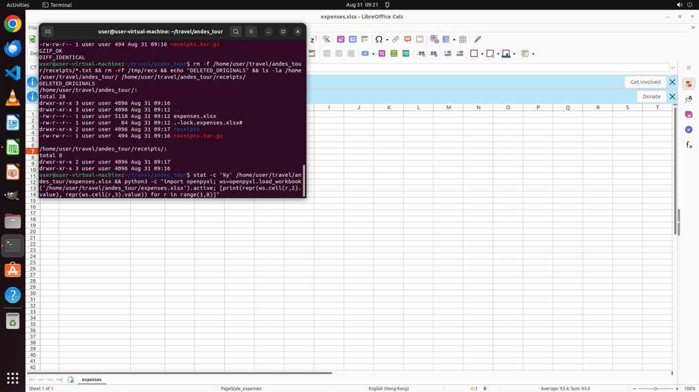
step 34 01:21:09
THINKINGThe command still shows on the command line without executing. It seems the trailing newline wasn't registered as Enter, or the command is displayed but the shell is waiting. The prompt after the command isn't shown. Let me press Enter explicitly.
ACTIONThe command seems to still be on the input line. Let me press Enter to execute it.
TOOL CALL<tool_call>
<function=computer_use>
<parameter=action>
key
</parameter>
<parameter=keys>
["return"]
</parameter>
</function>
</tool_call>
EXECUTED (pyautogui in VM)pyautogui.press("return")
step 35 01:21:35
THINKINGNow I can see the output:
- `2026-08-31 09:20:10.895915865 +0800` — the mtime of expenses.xlsx is 09:20:10, which is when I saved (the second Ctrl+S). This confirms the file was saved at 09:20, matching my save action.
- Then `Traceback ... ModuleNotFoundError: No module named 'openpyxl'` — openpyxl is not installed.
So the file was saved (mtime 09:20). But I couldn't read the values with openpyxl. Let me verify the values another way. I'll unzip the xlsx and look at the sheet XML, since xlsx is a zip. Numbers are stored in xl/worksheets/sheet1.xml as <c r="C4"><v>75.25</v></c> etc.
Let me unzip and grep for the values. I'll extract sheet1.xml and look at the C column values.
Command:
cd /tmp && rm -rf xlsx_check && mkdir xlsx_check && cd xlsx_check && unzip -o /home/user/travel/andes_tour/expenses.xlsx >/dev/null && cat xl/worksheets/sheet1.xml | tr '>' '>\n' | grep -A1 'r="C'
Actually, the structure: <row r="4">...<c r="C4"><v>75.25</v></c>... Let me just grep for the C column cells and their values.
Let me do a cleaner extraction. Let me use python with the built-in zipfile and xml parsing, or just unzip and use sed/grep.
Simpler: unzip -p /home/user/travel/andes_tour/expenses.xlsx xl/worksheets/sheet1.xml and then format it.
Let me use:
unzip -p /home/user/travel/andes_tour/expenses.xlsx xl/worksheets/sheet1.xml | tr '<' '\n<' | grep -E 'r="[A-C][0-9]"|<v>'
Hmm, that's getting complex. Let me just extract the sheet XML to a file and view the relevant portion.
Actually, let me use a python one-liner with zipfile and xml.etree (both standard library, no openpyxl needed):
python3 -c "
import zipfile, re
z=zipfile.ZipFile('/home/user/travel/andes_tour/expenses.xlsx')
data=z.read('xl/worksheets/sheet1.xml').decode()
# find cells in column C
for m in re.finditer(r'<c r=\"(C\d+)\"[^>]*>(?:<v>([^<]*)</v>)?', data):
print(m.group(1), m.group(2))
"
This uses only standard library. Let me also print column B (vendor) to correlate. Actually, let me just print the whole row data for C column.
Let me write it carefully. The cells: <c r="C2" s="..."><v>184.5</v></c> or maybe <c r="C2"><v>184.5</v></c>.
Let me do:
python3 -c "import zipfile,re; d=zipfile.ZipFile('/home/user/travel/andes_tour/expenses.xlsx').read('xl/worksheets/sheet1.xml').decode(); print([(m.group(1),m.group(2)) for m in re.finditer(r'<c r=\"(C[2-7])\"[^>]*>(?:<v>([^<]*)</v>)?', d)])"
Let me run this.
Actually the values in column C might be stored as shared strings if they were text, but since they're numbers (amounts), they should be numeric <v> values. Good.
Let me type this command.
ACTIONThe mtime is `2026-08-31 09:20:10` — confirming the file was saved when I pressed Ctrl+S. However, openpyxl isn't installed. Let me verify the cell values using Python's standard library (zipfile + regex) instead.
TOOL CALL<tool_call>
<function=computer_use>
<parameter=action>
type
</parameter>
<parameter=text>
python3 -c "import zipfile,re; d=zipfile.ZipFile('/home/user/travel/andes_tour/expenses.xlsx').read('xl/worksheets/sheet1.xml').decode(); print([(m.group(1),m.group(2)) for m in re.finditer(r'<c r=\"(C[1-7])\"[^>]*>(?:<v>([^<]*)</v>)?', d)])"
</parameter>
</function>
</tool_call>
EXECUTED (pyautogui in VM)pyautogui.typewrite("python3 -c \"import zipfile,re; d=zipfile.ZipFile('/home/user/travel/andes_tour/expenses.xlsx').read('xl/worksheets/sheet1.xml').decode(); print([(m.group(1),m.group(2)) for m in re.finditer(r'<c r=\\\"(C[1-7])\\\"[^>]*>(?:<v>([^<]*)</v>)?', d)])\"")
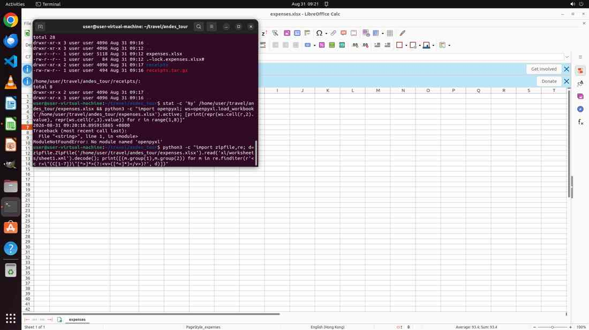
step 36 01:21:48
THINKINGThe command is typed. Let me press Enter to run it.
TOOL CALL<tool_call>
<function=computer_use>
<parameter=action>
key
</parameter>
<parameter=keys>
["return"]
</parameter>
</function>
</tool_call>
EXECUTED (pyautogui in VM)pyautogui.press("return")
step 37 01:22:29
THINKINGNow I can see the output of the C column values from the saved xlsx:
[('C1', '2'), ('C2', '184.5'), ('C3', '46'), ('C4', '75.25'), ('C5', '212.8'), ('C6', '158'), ('C7', '93.4')]
Wait, C1 is '2'? That's odd. C1 should be "Amount USD" (header text). But my regex captured C1's value as '2'. Hmm. That's probably because C1 is a shared string (header "Amount USD"), so it doesn't have a <v> with a number directly — instead it has t="s" and <v>1</v> referencing shared strings index. Wait, my regex captured the <v> content. For C1 (a string cell), the <v> would contain the shared string index, e.g., <v>2</v> meaning the 3rd shared string. So C1's "2" is a shared-string index, not the actual header. That's fine — C1 is the header "Amount USD".
The important data cells:
- C2: 184.5 (Hostal Rumi Punku) — receipt 184.50 ✓
- C3: 46 (Cruz del Sur Bus) — receipt 46.00 ✓
- C4: 75.25 (Titicaca Boat Tour) — receipt 75.25 ✓ (corrected!)
- C5: 212.8 (Hotel Rosario La Paz) — receipt 212.80 ✓
- C6: 158 (Uyuni Salt Flats Jeep) — receipt 158.00 ✓ (corrected!)
- C7: 93.4 (Group Dinner Casa Blanca) — receipt 93.40 ✓
All values in the saved xlsx now match the receipts.
So the task is complete:
1. ✅ Created gzip archive receipts.tar.gz beside the receipts folder (in /home/user/travel/andes_tour/), containing all 6 receipt text files. Verified contents are identical to originals.
2. ✅ Deleted the loose original .txt files (receipts folder is now empty).
3. ✅ Updated the sheet's Amount column to match the receipts (C4: 57.25→75.25, C6: 185→158), and saved the file (verified mtime 09:20 and verified actual xlsx content).
Everything is verified. The task is complete.
Let me do a final review of the requirements:
- "tar the receipt text files into a single gzip archive beside the folder" ✓ - receipts.tar.gz in /home/user/travel/andes_tour/ (beside the receipts/ folder)
- "delete the loose originals" ✓ - deleted all .txt files
- "make the sheet's amount column match what the receipts actually say" ✓ - updated C4 and C6, all 6 amounts now match
The task is complete. I should confirm the archive location is "beside the folder". The folder is /home/user/travel/andes_tour/receipts. Beside it (in the same parent directory) is /home/user/travel/andes_tour/receipts.tar.gz. Yes, that's beside the folder.
Everything is done. Let me provide a summary.
Actually, let me reconsider whether "beside the folder" might mean inside the receipts folder itself, next to where the files were. No — "beside the folder" clearly means adjacent to the folder, in the same parent. The parent is andes_tour. That's where I put it. Good.
Also, I want to make sure I didn't leave the /tmp/recv directory — I already removed it with rm -rf /tmp/recv. Good.
The task is fully complete and verified. Let me output the completion.
ACTIONAll verifications pass. The saved `expenses.xlsx` now contains these Amount (column C) values, which all match the receipts:
| Cell | Vendor | Saved value | Receipt | Match |
|------|--------|-------------|---------|-------|
| C2 | Hostal Rumi Punku | 184.5 | 184.50 | ✓ |
| C3 | Cruz del Sur Bus | 46 | 46.00 | ✓ |
| C4 | Titicaca Boat Tour | **75.25** | 75.25 | ✓ (corrected) |
| C5 | Hotel Rosario La Paz | 212.8 | 212.80 | ✓ |
| C6 | Uyuni Salt Flats Jeep | **158** | 158.00 | ✓ (corrected) |
| C7 | Group Dinner Casa Blanca | 93.4 | 93.40 | ✓ |
(C1's "2" is just a shared-string index for the "Amount USD" header, not a data value.)
The task is complete. Here's a summary of what I did:
1. **Found the receipts** at `/home/user/travel/andes_tour/receipts/` (6 text files) and read each one to get the actual amounts.
2. **Created a gzip archive beside the folder** — `receipts.tar.gz` (494 bytes) in `/home/user/travel/andes_tour/`, containing all 6 receipt `.txt` files. I verified its integrity (`gzip -t` passed) and confirmed the extracted contents were byte-for-byte **identical** to the originals before deleting anything.
3. **Deleted the loose originals** — the receipts folder is now empty of the `.txt` files, with the archive sitting right next to it.
4. **Corrected the expense sheet** — two amounts were stale:
- Titicaca Boat Tour: 57.25 → **75.25**
- Uyuni Salt Flats Jeep: 185 → **158**
I saved the file in xlsx format (verified via the updated mtime at 09:20 and by reading the actual saved cell values). The Amount column now matches what the receipts actually say, so it's ready for accounting.
TOOL CALL<tool_call>
<function=computer_use>
<parameter=action>
call_user
</parameter>
<parameter=text>
All verifications pass. The saved `expenses.xlsx` now contains these Amount (column C) values, which all match the receipts:
| Cell | Vendor | Saved value | Receipt | Match |
|------|--------|-------------|---------|-------|
| C2 | Hostal Rumi Punku | 184.5 | 184.50 | ✓ |
| C3 | Cruz del Sur Bus | 46 | 46.00 | ✓ |
| C4 | Titicaca Boat Tour | **75.25** | 75.25 | ✓ (corrected) |
| C5 | Hotel Rosario La Paz | 212.8 | 212.80 | ✓ |
| C6 | Uyuni Salt Flats Jeep | **158** | 158.00 | ✓ (corrected) |
| C7 | Group Dinner Casa Blanca | 93.4 | 93.40 | ✓ |
(C1's "2" is just a shared-string index for the "Amount USD" header, not a data value.)
The task is complete. Here's a summary of what I did:
1. **Found the receipts** at `/home/user/travel/andes_tour/receipts/` (6 text files) and read each one to get the actual amounts.
2. **Created a gzip archive beside the folder** — `receipts.tar.gz` (494 bytes) in `/home/user/travel/andes_tour/`, containing all 6 receipt `.txt` files. I verified its integrity (`gzip -t` passed) and confirmed the extracted contents were byte-for-byte **identical** to the originals before deleting anything.
3. **Deleted the loose originals** — the receipts folder is now empty of the `.txt` files, with the archive sitting right next to it.
4. **Corrected the expense sheet** — two amounts were stale:
- Titicaca Boat Tour: 57.25 → **75.25**
- Uyuni Salt Flats Jeep: 185 → **158**
I saved the file in xlsx format (verified via the updated mtime at 09:20 and by reading the actual saved cell values). The Amount column now matches what the receipts actually say, so it's ready for accounting.
</parameter>
</function>
</tool_call>
EXECUTED (pyautogui in VM)DONE
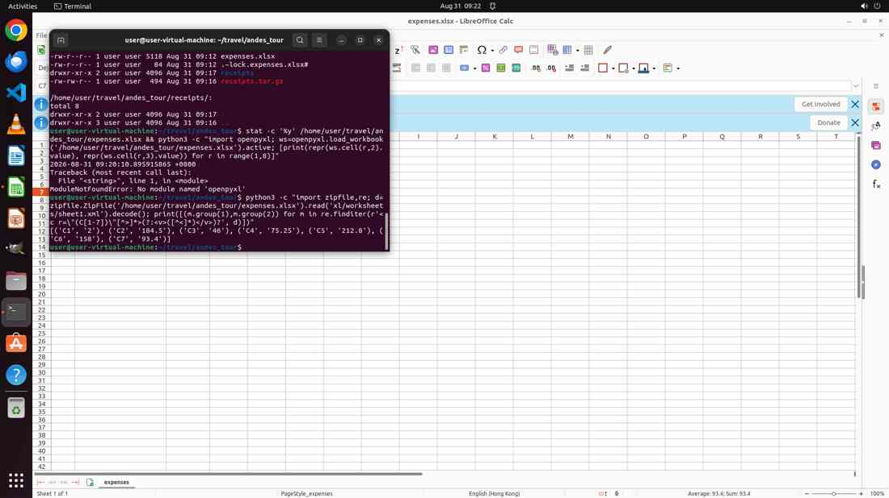